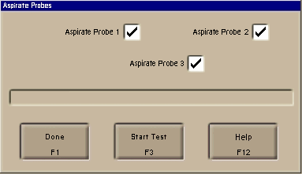
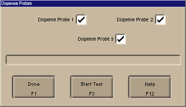
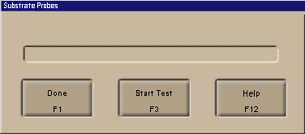
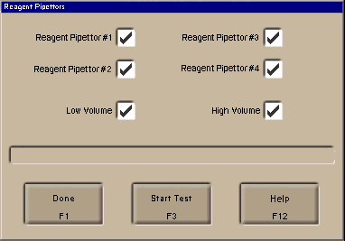

Volume Check
This procedure describes how to check the precision and accuracy of the probes.
- Gravimetric (weight) method.
- Visual comparison method.
| Measurement Method | Probe | Volume | Precision in %CV | % Accuracy of Mean Delivery |
|---|---|---|---|---|
| Gravimetric |
Aspirate |
<4 µL (WBI or WBII) |
NA |
NA |
|
Dispense 1 Dispense 2 Dispense 3 |
150 µL + 7.5 µL 500 µL + 25 µL 500 µL + 25 µL |
</= 3.00 </=2.00 </=2.00 |
95.00 to 105.00 95.00 to 105.00 95.00 to 105.00 |
|
|
Substrate |
200 µL + 6 µL |
</=1.00 |
97.00 to 103.00 |
|
|
Reagent |
50 µL 200 µL |
</=1.00 </=1.00 |
95.00 to 105.00 95.00 to 105.00 |
|
|
Sample |
70 µL 500 µL |
</=5.0 </=5.0 |
95 to 125 95 to 110 |
|
| Visual |
Aspirate |
<4 µL
|
Criteria: Examine all the aspirate probe test vessels. Minimal fluid (one drop or less) should remain in them. When inverted, the fluid in the vessel should not run all the way to the end of the vessel, but stop about half-way. | |
|
Dispense 1 Dispense 2 Dispense 3 |
150 µL 500 µL 500 µL |
Criteria: The dispensed volume for all the dispense or substrate test vessels must be consistent with the volume of the reference vessel. There should not be any bubbles or droplets on the sides of the vessels. | ||
|
Substrate |
200 µL |
|||
|
Reagent |
50 µL or 200 µL |
Criteria: The dispensed volume for all vessels must be consistent with the volume of the reference vessel. There should not be any bubbles or droplets on the sides of the vessels. | ||
|
Sample |
70 µL or 500 µL |
Criteria: The dispensed volume for all vessels must be consistent with the volume of the reference vessel. There should not be any bubbles or droplets on the sides of the vessels. | ||
| Aspirate | The Aspirate Probe Start Test screen.
 |
| Dispense | The Dispense Probe Start Test screen.
 |
| Substrate | The Substrate Probe Start Test screen.
 |
| Reagent | Reagent Pipettor Start Test screen (DxI 800)
Note: The DxI 600 pop-up contains only pipettors 1 and 2.
 |
| Sample |
-
Prepare the instrument for volume checks.
- Remove both of the instrument back covers.
- Remove the clear sample storage module cover.
- If performing volume checks on analytical probes, remove the analytical module cover.
-
Run the Volume Check test.
-
If performing the verification using the gravimetric method, then weigh the removed vessels and perform the precision and accuracy calculations.
- If performing the verification using the visual method, then manually dispense the correct volume of buffer into a reference vessel.
-
Refer to the Pass/Fail Criteria to determine if the test passes or fails.
- If the test fails, then troubleshoot, repair, and rerun the test.
- If the test passes and you are not testing on any other probes, remove all interlock bypasses and replace all instrument covers.